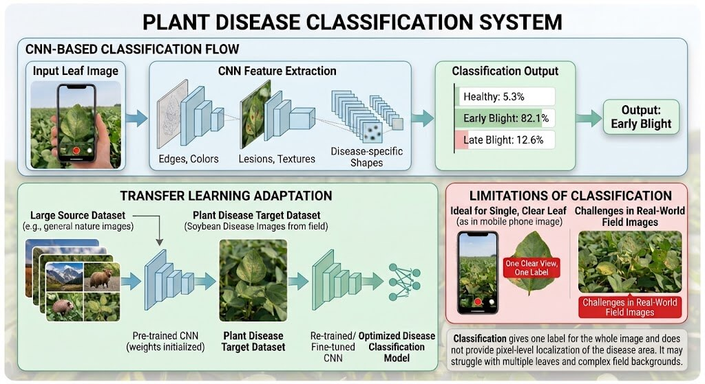

Introduction
Plant diseases can significantly affect crop health and agricultural productivity. Detecting diseases visually can be difficult because symptoms may look similar and real-world images can vary due to lighting, background, camera angle, image quality, and leaf position.
This tutorial explores how computer vision can be used to detect plant diseases using mobile images and video. It reviews techniques including image preprocessing, classification, object detection, segmentation, and video-based multi-view analysis.
Tutorial Topics
- Mobile Image and Video Capture
- Image Preprocessing and Leaf Analysis
- Plant Disease Classification
- Object Detection for Plant Diseases
- Disease Region Segmentation
- Disease Severity Estimation
- Video and Multi-View Analysis
- Mobile Deployment
- Evaluation of Existing Approaches
- Challenges and Limitations
- Future Research
Why Use Video?
A single image may not capture all disease symptoms clearly. Video allows the same plant or leaf to be observed from multiple angles and across multiple frames. This can provide more visual information and may improve the reliability of disease detection in real-world environments.
Mobile Image and Video Capture
Mobile devices make plant disease detection more accessible because users can capture leaf images directly in farms, gardens, or outdoor environments. Recent research has also explored mobile applications that run deep learning models for plant disease recognition and detection.
However, real-world mobile images are more difficult to analyze than images collected under controlled laboratory conditions. Changes in lighting, camera distance, viewing angle, background objects, shadows, and motion blur can affect how clearly disease symptoms appear.
Important Capture Factors
- Lighting: Bright sunlight, shadows, or low light can change leaf color and hide disease symptoms.
- Camera angle: Different angles may show different portions of the infected region.
- Distance: Images taken too far away may lose small visual details such as spots or lesions.
- Background: Soil, other leaves, branches, and objects may make leaf detection more difficult.
- Motion blur: Movement of the phone or plant can reduce image quality.
- Multiple views: Video provides several frames and viewing angles instead of relying on only one image.
Because of these variations, a real-world plant disease system should be designed to work with changing environmental conditions rather than relying only on clean, centered leaf images.
Image Preprocessing and Leaf Analysis
Images captured with mobile devices may contain variations in size, lighting, background, and image quality. Preprocessing helps reduce these variations before the image is provided to a computer vision model.
Common Preprocessing Steps
- Image resizing: Images are resized to a fixed resolution so they can be processed efficiently by a neural network.
- Normalization: Pixel values are scaled to a smaller numerical range to make model training and inference more stable.
- Noise reduction: Filters can reduce unwanted image noise while preserving important disease patterns such as spots and lesions.
- Contrast and color adjustment: Improving contrast can make disease symptoms more visible when images are captured under uneven lighting.
- Data augmentation: Training images can be rotated, flipped, cropped, or adjusted in brightness to help the model handle real-world variations.
Leaf Segmentation and Background Removal
In real-world images, the leaf may appear together with soil, branches, other leaves, or surrounding objects. Segmentation can separate the leaf or diseased region from the background. This allows later stages of the system to focus on the most relevant visual information.
Important Visual Features
Plant diseases can create visible changes in leaf color, texture, shape, spots, lesions, and damaged areas. Traditional computer vision approaches often analyze these features directly. Deep learning models such as CNNs can instead learn useful visual features automatically from training data.
Plant Disease Classification
Classification assigns an entire leaf image to a disease category. For example, a model may predict that a leaf is healthy or that it belongs to a specific disease class such as early blight, late blight, or leaf spot.
How CNN-Based Classification Works
Convolutional Neural Networks, or CNNs, are widely used for image classification because they can automatically learn visual patterns from training images. Early layers usually learn simple features such as edges and color changes, while deeper layers learn more complex patterns such as lesions, texture changes, and disease-specific shapes.
During training, the model is shown many labeled examples of healthy and diseased leaves. The network adjusts its internal weights so that the output probability for the correct class becomes higher.
Transfer Learning
Instead of training a deep model completely from scratch, many plant disease systems use transfer learning. A model that was already trained on a large image dataset can be adapted to plant disease images. This is useful when the plant dataset is smaller and can reduce training time.

Figure: CNN-based plant disease classification showing feature extraction, transfer learning, classification output, and limitations in real-world field images.
Limitation of Classification
Classification is useful when the image already contains a clear view of a single leaf, but it does not show where the disease is located. It also becomes less reliable when an image contains multiple leaves, complex backgrounds, overlapping plants, or only a small diseased region.
For real-world mobile images, object detection and segmentation can provide more detailed information by locating the leaf or diseased area instead of returning only one label for the whole image.
Object Detection for Plant Diseases
Object detection goes beyond classification by identifying both what is present in an image and where it is located. Instead of assigning one label to the entire image, an object detection model places bounding boxes around leaves or diseased regions and assigns a class label to each detected area.
Why Object Detection Is Useful
In real-world mobile images, a scene may contain several leaves, overlapping plants, soil, branches, or other background objects. Object detection can first locate individual leaves or visible disease regions before further analysis is performed.
YOLO-Based Detection
YOLO, which stands for You Only Look Once, is a popular object detection approach because it can detect multiple objects in a single image quickly. The model processes the image and predicts bounding boxes, class labels, and confidence scores.
For plant disease analysis, a YOLO-based model can be trained to detect symptoms such as spots, lesions, discoloration, or damaged regions. Because YOLO models are designed for fast inference, they are useful for real-time or mobile applications.
Typical Detection Output
- Bounding box: Shows where the leaf or disease region is located.
- Class label: Identifies the detected disease category.
- Confidence score: Indicates how confident the model is in its prediction.

Figure: YOLO-based plant disease detection showing bounding boxes, disease labels, confidence scores, and comparison with image classification.
Advantages Over Classification
Object detection is more suitable for complex real-world scenes because it can handle multiple leaves in one image and identify where disease symptoms occur. However, a bounding box still covers a rectangular area and does not precisely show the exact shape of the damaged region. For that reason, segmentation can be used when more detailed disease localization is required.
Disease Region Segmentation and Severity Estimation
Object detection uses bounding boxes to show where a diseased area is located, but a bounding box does not precisely describe the shape of the damaged tissue. Image segmentation provides a more detailed result by assigning a label to individual pixels in the image.
What Segmentation Does
A segmentation model can separate healthy leaf tissue from diseased tissue. This makes it possible to identify the exact shape and size of infected regions instead of only drawing a rectangle around them.
Common Segmentation Models
- U-Net: A popular encoder-decoder architecture that is widely used for pixel-level image segmentation.
- DeepLab: A semantic segmentation approach that can capture detailed object boundaries and is useful for identifying irregular disease regions.
Disease Severity Estimation
After the diseased region has been segmented, the system can estimate disease severity by comparing the number of diseased pixels with the total leaf area. A simple severity measure can be written as:
Disease Severity (%) = (Diseased Leaf Area / Total Leaf Area) × 100
Severity estimation can provide more useful information than a disease label alone. For example, two leaves may have the same disease, but one leaf may have only a small infected area while another may be heavily damaged.

Figure: Plant disease segmentation showing pixel-level disease masks, highlighted infected regions, and disease severity estimation.
Why Segmentation Matters
Segmentation is especially useful when symptoms have irregular shapes or when accurate measurement of the affected area is needed. However, segmentation generally requires more detailed training labels and can require more computation than classification or basic object detection.
Video and Multi-View Plant Disease Analysis
Single-image analysis uses only one view of a leaf. In real-world conditions, however, disease symptoms may be partially hidden, affected by lighting, or visible only from certain angles. Video provides multiple frames and views of the same plant, giving the system more visual information.
Processing Video Frames
A video can be divided into individual frames. Each frame can be processed using object detection or segmentation to identify leaves and diseased regions. Instead of making a decision from one image, the system can compare results across several frames.
Tracking Leaves Across Frames
Object tracking can be used to follow the same leaf as the camera moves. Tracking helps prevent the system from treating the same leaf as a completely new object in every frame.
Tracking methods such as DeepSORT can associate detections across consecutive frames and assign an identity to each tracked leaf.
Multi-View Analysis
Different frames may show different portions of the same leaf. One frame may contain glare or blur, while another may provide a clearer view of the disease symptoms. Combining predictions from several frames can make the final result more reliable than relying on a single image.
Example Video Pipeline
A possible real-world pipeline is:
Mobile Video → Frame Extraction → Leaf or Disease Detection → Tracking Across Frames → Disease Classification or Segmentation → Combine Multi-Frame Predictions → Final Result

Figure: Example pipeline for plant disease analysis using mobile video, object detection, tracking, segmentation, and final disease diagnosis.
Benefits and Challenges
- Benefit: More views of the same plant can improve disease visibility.
- Benefit: Tracking can maintain information about the same leaf over time.
- Challenge: Video requires more computation than processing one image.
- Challenge: Fast camera movement can introduce motion blur.
- Challenge: Leaves may become hidden behind other leaves or objects.
- Challenge: Mobile devices have limited processing power and battery capacity.
Mobile Deployment
For plant disease detection to be useful in real-world settings, the system should work efficiently on mobile devices. A mobile application may capture an image or video, process it locally on the device, or send the data to a cloud server for analysis.
On-Device Processing
In on-device processing, the computer vision model runs directly on the smartphone. This can provide faster response times and does not require a continuous internet connection. However, mobile devices have limited memory, processing power, and battery capacity compared with desktop computers or cloud servers.
Cloud-Based Processing
In cloud-based processing, the mobile device captures the image or video and sends it to a remote server. The server can run larger and more computationally expensive models. The result is then sent back to the mobile application.
Cloud processing can support more complex models, but it depends on network connectivity and may introduce additional delay.
Lightweight Models
Lightweight neural network architectures are designed to reduce computation while maintaining useful accuracy. Models such as MobileNet are commonly used when deep learning must run on devices with limited resources.
Important Mobile Considerations
- Inference speed: Predictions should be generated quickly enough for practical use.
- Model size: Smaller models require less storage and memory.
- Battery usage: Continuous video processing can consume significant power.
- Connectivity: Cloud-based systems may not work well in areas with unreliable internet access.
- Privacy: On-device processing can reduce the need to upload images or video to external servers.
Evaluation and Comparison of Existing Approaches
Different plant disease detection methods should be evaluated using metrics that match the type of computer vision task being performed. Classification, object detection, segmentation, and video analysis each use different measures of performance.
Classification Metrics
- Accuracy: Measures how many predictions are correct overall.
- Precision: Measures how many predicted positive cases are actually correct.
- Recall: Measures how many true disease cases are successfully detected.
- F1-score: Combines precision and recall into one measure.
Object Detection Metrics
- IoU: Intersection over Union measures how much the predicted bounding box overlaps with the ground-truth box.
- mAP: Mean Average Precision summarizes object detection performance across classes and confidence thresholds.
Segmentation Metrics
- IoU: Measures overlap between predicted and true segmented regions.
- Dice Score: Measures similarity between predicted and actual segmentation masks.
Mobile and Video Performance
- Inference time: Measures how quickly one image or frame can be processed.
- Frames per second: Indicates whether video can be processed close to real time.
- Model size: Important for storage and deployment on mobile devices.
Comparison of Approaches
Classification is usually simpler and faster, but it only provides one label for the entire image. Object detection provides both a class and location. Segmentation gives more precise pixel-level information and can support disease severity estimation. Video-based methods add temporal and multi-view information, but they require more computation.
A real-world mobile plant disease system may therefore combine several methods, using detection to locate leaves, segmentation to measure diseased areas, and video analysis to improve reliability across multiple views.
Challenges and Limitations
Plant disease detection in real-world environments is more difficult than working with clean laboratory images. A system that performs well on a controlled dataset may still struggle when used in farms, gardens, or other outdoor environments.
- Lighting variation: Bright sunlight, shadows, and low light can change the appearance of symptoms.
- Complex backgrounds: Soil, branches, weeds, and nearby leaves can make detection more difficult.
- Occlusion: Leaves may overlap or partially hide diseased regions.
- Motion blur: Camera movement or wind can reduce image quality.
- Similar symptoms: Different diseases may create similar spots, discoloration, or texture changes.
- Limited datasets: Some plants and diseases have fewer labeled training examples.
- Generalization: A model trained on one crop or environment may not perform equally well on another.
- Mobile limitations: Real-time detection and video analysis can require significant computation and battery power.
Future Research
Future systems can improve plant disease detection by combining object detection, segmentation, tracking, and multi-view video analysis. Lightweight models may make it possible to perform more processing directly on mobile devices.
Another important direction is the development of larger real-world datasets that include different lighting conditions, plant varieties, backgrounds, viewing angles, and disease stages. These datasets can help models generalize better outside controlled laboratory environments.
Future research may also explore how predictions from multiple video frames can be combined more effectively to reduce incorrect classifications and improve disease severity estimation.
Conclusion
Computer vision can support plant disease detection by analyzing visual symptoms from mobile images and video. Classification provides a disease label, object detection identifies where symptoms appear, and segmentation can measure the exact affected area.
For real-world applications, using video and multiple views provides more information than a single image alone. A practical mobile plant disease system may therefore combine detection, segmentation, tracking, and multi-frame analysis to produce more reliable results.